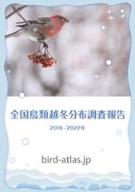

全国鳥類越冬分布・野鳥名検索
元データ：「全国鳥類越冬分布調査」最終報告
ブログ：「全国鳥類越冬分布調査」結果を野鳥名で検索できるようにしてみた。

「全国鳥類越冬分布調査・結果」を野鳥名で検索できるようにしました。
マップ
アオアシシギ
アオゲラ
アオサギ
アオジ
アオシギ
アオバズク
アオバト
アカアシシギ
アカエリカイツブリ
アカガシラサギ
アカゲラ
アカコッコ
アカハジロ
アカハラ
アカヒゲ
アカモズ
アトリ
アネハヅル
アビ
アマサギ
アマミヤマシギ
アメリカヒドリ
アリスイ
イカル
イカルチドリ
イスカ
イソシギ
イソヒヨドリ
イワツバメ
イワヒバリ
インドクジャク
インドハッカ
ウグイス
ウズラ
ウズラシギ
ウソ
ウトウ
ウミアイサ
ウミウ
ウミガラス
ウミスズメ
ウミネコ
エゾライチョウ
エナガ
エリマキシギ
オオアカゲラ
オオカラモズ
オオクイナ
オオコノハズク
オオジュリン
オオセグロカモメ
オオセッカ
オオソリハシシギ
オオタカ
オオハクチョウ
オオハシシギ
オオハム
オオバン
オオホシハジロ
オオマシコ
オオメダイチドリ
オオワシ
オカヨシガモ
オシドリ
オジロトウネン
オジロワシ
オナガ
オナガガモ
オニアジサシ
カイツブリ
カオグロガビチョウ
カオジロガビチョウ
カケス
カササギ
カシラダカ
カタグロトビ
カツオドリ
カナダヅル
ガビチョウ
カモメ
カヤクグリ
カラスバト
カラムクドリ
カリガネ
カルガモ
カワアイサ
カワウ
カワガラス
カワセミ
カワラバト(ドバト)
カワラヒワ
カンムリウミスズメ
カンムリカイツブリ
カンムリワシ
キアシシギ
キクイタダキ
キジ
キジバト
キセキレイ
キバシリ
キマユムシクイ
キョウジョシギ
キレンジャク
キンクロハジロ
ギンザンマシコ
キンバト
ギンパラ
ギンムクドリ
クイナ
クサシギ
クマゲラ
クマタカ
クロガモ
クロサギ
クロジ
クロツグミ
クロツラヘラサギ
クロヅル
ケアシノスリ
ケイマフリ
ケリ
コアオアシシギ
コアカゲラ
コイカル
ゴイサギ
コウノトリ
コウライアイサ
コオリガモ
コガモ
コガラ
コクガン
コクチョウ
コクマルガラス
コゲラ
コサギ
ゴジュウカラ
コジュケイ
コジュリン
コスズガモ
コチドリ
コチョウゲンボウ
コハクチョウ
コブハクチョウ
コホオアカ
コミミズク
コムクドリ
サカツラガン
ササゴイ
サシバ
サンカノゴイ
サンジャク
サンショウクイ
シジュウカラ
シジュウカラガン
シノリガモ
シベリアジュリン
シマアジ
シマキンパラ
シマクイナ
シメ
ジョウビタキ
シラコバト
シロエリオオハム
シロガシラ
シロカモメ
シロチドリ
シロハラ
シロハラクイナ
ズアカアオバト
ズグロカモメ
ズグロミゾゴイ
スズガモ
スズメ
セイタカシギ
セキセイインコ
セグロカモメ
セグロセキレイ
セッカ
ソウシチョウ
ソデグロヅル
ソリハシシギ
ソリハシセイタカシギ
ダイサギ
ダイシャクシギ
ダイゼン
タカブシギ
タゲリ
タシギ
タヒバリ
タマシギ
タンチョウ
チュウサギ
チュウシャクシギ
チュウヒ
チョウゲンボウ
ツクシガモ
ツグミ
ツバメ
ツミ
ツメナガセキレイ
ツリスガラ
ツルシギ
トウネン
トキ
トビ
トモエガモ
トラツグミ
トラフズク
ナベヅル
ニシオジロビタキ
ニシセグロカモメ
ニュウナイスズメ
ノグチゲラ
ノゴマ
ノジコ
ノスリ
ノハラツグミ
ノビタキ
ハイイロガン
ハイイロチュウヒ
ハイタカ
ハギマシコ
ハクガン
ハクセキレイ
ハシビロガモ
ハシブトウミガラス
ハシブトガラ
ハシブトガラス
ハシボソガラス
ハジロカイツブリ
ハジロコチドリ
ハッカチョウ
ハマシギ
ハヤブサ
バン
ヒガラ
ヒクイナ
ヒゲガビチョウ
ヒシクイ
ヒドリガモ
ヒバリ
ヒバリシギ
ヒメアマツバメ
ヒメウ
ヒヨドリ
ヒレンジャク
ビロードキンクロ
ビンズイ
フクロウ
ブンチョウ
ヘキチョウ
ベニスズメ
ベニヒワ
ベニマシコ
ヘラサギ
ホウロクシギ
ホオアカ
ホオジロ
ホオジロガモ
ホシガラス
ホシハジロ
ホシムクドリ
ホンセイインコ
マガモ
マガン
マナヅル
マヒワ
マミジロタヒバリ
マミチャジナイ
ミコアイサ
ミサゴ
ミソサザイ
ミツユビカモメ
ミフウズラ
ミミカイツブリ
ミヤコドリ
ミヤマガラス
ミヤマホオジロ
ミユビシギ
ムクドリ
ムジセッカ
ムナグロ
ムネアカタヒバリ
ムラサキサギ
メグロ
メジロ
メジロガモ
メダイチドリ
モズ
ヤツガシラ
ヤブサメ
ヤマガラ
ヤマゲラ
ヤマシギ
ヤマセミ
ヤマドリ
ヤンバルクイナ
ユキホオジロ
ユリカモメ
ヨーロッパトウネン
ヨシガモ
ライチョウ
リュウキュウコノハズク
リュウキュウツバメ
リュウキュウヨシゴイ
ルリカケス
ルリビタキ
ワシカモメ
ワタリガラス